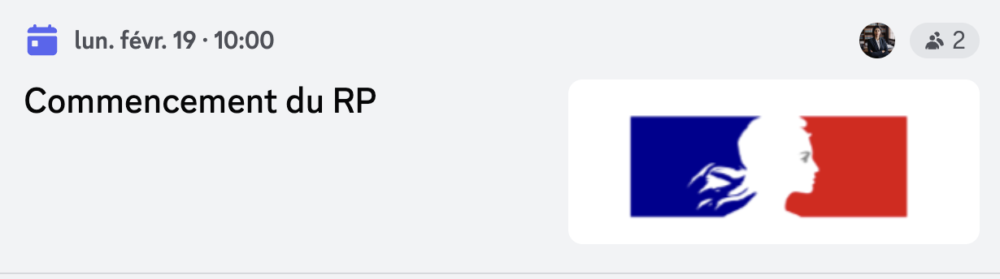

Les gros titres
Les grèves se prolongent
Les grèves de la SNCF vont durer tout le week end
Lire la suiteLe RP commencera le 19 février
En effet le RP va, selon nos infor...
Lire la suiteLes grèves de la SNCF vont durer tout le week end
Lire la suiteEn effet le RP va, selon nos infor...
Lire la suiteContrôleur de train depuis plus de 20 ans dans le Puy-de-Dôme, Olivier explique pourquoi il fait grève ce week-end. Il exige de meilleures conditions de travail et une meilleure rémunération
Rémunération, fin de carrière, effectifs à bord des trains... Comme en décembre 2022, les contrôleurs se sont mobilisés sur les réseaux sociaux à l’initiative du Collectif national ASCT (agents du service commercial train), le CNA. Une grève a démarré ce vendredi 16 février, à l'appel de la CGT et de Sud-Rail. En raison de cette mobilisation nationale, un millier de trains seront supprimés dans la France entière entre vendredi et dimanche, et seul un train sur deux circulera ce week-end en moyenne. Syndiqué à la CGT, Olivier, 55 ans, est de celles et ceux qui ont débrayé pour exiger de meilleures conditions de travail.
Entré dans le métier à 16 ans en alternance avec l'envie de "voir du pays", Olivier a passé 20 ans sur les lignes Intercités à Aurillac, avant de rejoindre la SNCF à bord des trains Paris-Clermont il y a trois ans, "pour évoluer". Il le sait, les contrôleurs ne sont pas toujours très populaires : "On nous voit surtout comme ceux qui distribuent les amendes", raconte-t-il.
Lui, pourtant aime son métier, dont il revendique la dimension sociale :
On est là pour rendre service aux voyageurs, s'assurer qu'ils sont en sécurité, protéger les femmes des aggressions sexistes et sexuels, passer les annonces... Mais ces dernières années, il a vu ses conditions de travail se dégrader, notamment à cause de la baisse des effectifs à bord des trains. En décembre 2022, la SNCF s'est engagée à ce qu'il y ait au moins deux contrôleurs par TGV, mais la promesse n'est pas tenue, selon les syndicats. Olivier estime que cela devrait aussi être le cas sur les TER pendant les périodes de forte affluence.
L'autre réponse de la SNCF, "une caméra mobile, qui permet de filmer les agressions", ne le satisfait pas : "C'est beaucoup plus simple de désamorcer les conflits quand on est deux", souligne-t-il.
Une rémunération "trop faible avec l'inflation" Autre motif de mécontentement, la rémunération, "trop faible avec l'inflation", poursuit Olivier. Après plus de 20 ans de carrière, il s'estime privilégié de gagner "entre 27 à 28 000 euros net par an", en fonction des primes. Mais "quand ils démarrent, les contrôleurs gagnent moins de 2 000 euros net par mois", déplore-t-il. Une affirmation vérifiée par franceinfo, qui a consulté des offres d'emploi sur le site de la SNCF pour en avoir le cœur net : celles-ci font état d'une rémunération annuelle comprise selon les profils entre 24 000 et 32 000 euros brut, "incluant les éléments variables".
C'est pourquoi Olivier demande avec les autres grévistes de la CGT "une augmentation de la prime de travail de 190 euros par mois". Pour le Collectif national ASCT (CNA), qui s'était formé sur Facebook en dehors de tout cadre syndical fin 2022, cette revalorisation doit être de 500 euros.
Olivier s'inquiète aussi pour sa fin de carrière. Plus jeune, il imaginait faire son pot de départ à la retraite à l'âge qu'il a aujourd'hui : 55 ans. "Mais avec les dernières réformes, tout a été décalé", regrette-t-il. Désormais, il devra attendre "60 ans, au mieux". Et encore, c'est parce qu'il a commencé à travailler à 16 ans, avant d'être majeur : "Pour les autres, il ne faut pas espérer partir à taux plein avant 64 ans".
Dans ces conditions, la dernière revendication des grévistes concerne la cessation progressive d'activité, un dispositif qui permet de diminuer la quantité travail à l'approche de la retraite dans la fonction publique. La CGT aimerait allonger cette possible période jusqu'à six ans et demi (72 mois). "Tout ce qu'on demande, c'est de pouvoir faire notre travail correctement. On sait que contrôler les billets, ce n'est pas le plus rentable, mais la grand-mère qui est contente à la fin de son trajet, parce que tout s'est bien passé, ça n'a pas de prix", conclut Olivier.
Une table ronde est prévue au mois de mars entre les syndicats et la direction de la SNCF. Olivier et les autres grévistes espèrent que leurs revendications seront entendues
En effet le RP va, selon nos informations, commencer le 19 février
Capture d'écran :
